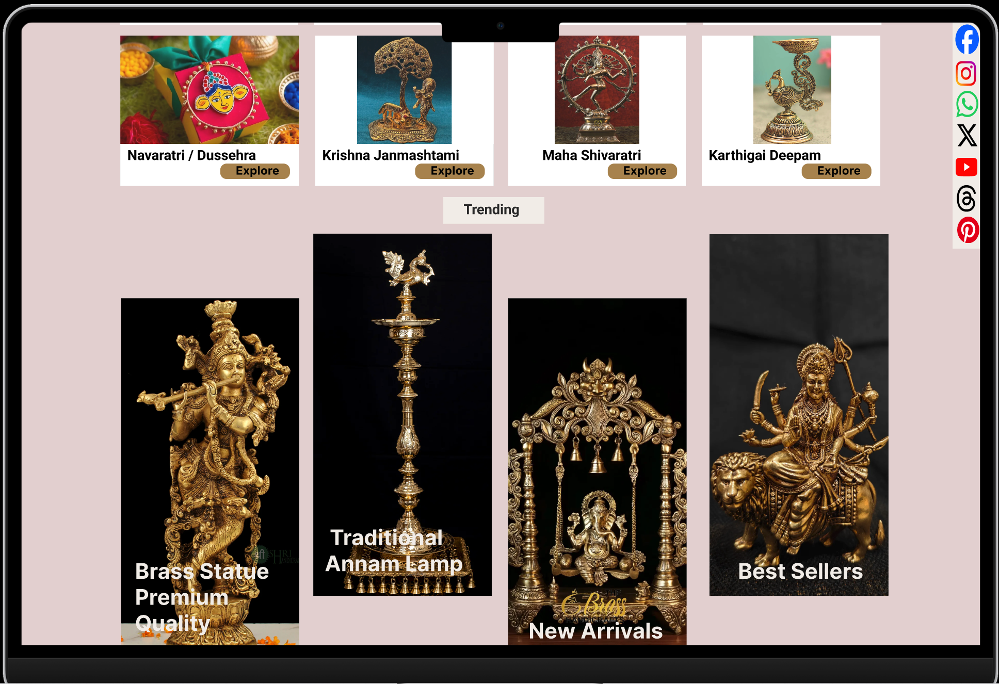

01 - Final Design
Where I ended up.
Occasion-based navigation, cultural context on every product page, and a structure that came directly from what users showed me in card sorting - not what I assumed upfront.
What I assumed going in
I thought the navigation just needed tidying. A cleaner menu, better labels. Card sorting showed me the whole categorisation logic was wrong - users didn't think about these products by type, they thought about them by occasion. That changed the entire structure.

Sneakpeak1

Sneakpeak2